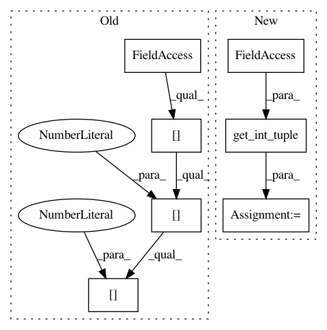

387fa1c6e15f338d36714caedca5af5ff8422166,autokeras/graph.py,Graph,to_concat_skip_model,#Graph#Any#Any#,87
Before Change
layer = Concatenate()
layer.build([get_int_tuple(start.output_shape), get_int_tuple(end.output_shape)])
self._add_edge(layer, new_node_id, self.adj_list[output_id][0][0], False)
self._add_edge(layer, input_id, self.adj_list[output_id][0][0], False)
self._redirect_edge(output_id, self.adj_list[output_id][0][0], new_node_id)
return self.produce_model()
After Change
self.pre_vis[old_node_id] = True
dim = get_int_tuple(end.output_shape)[-1]
n_add = get_int_tuple(start.output_shape)[-1]
self._search_next(old_node_id, dim, dim, n_add)
return self.produce_model()
def _search_next(self, u, start_dim, total_dim, n_add):
In pattern: SUPERPATTERN
Frequency: 4
Non-data size: 7
Instances
Project Name: jhfjhfj1/autokeras
Commit Name: 387fa1c6e15f338d36714caedca5af5ff8422166
Time: 2018-01-01
Author: jhfjhfj1@gmail.com
File Name: autokeras/graph.py
Class Name: Graph
Method Name: to_concat_skip_model
Project Name: jhfjhfj1/autokeras
Commit Name: ae9083442dea9f4d318b261a58ee527daaf8dce1
Time: 2018-01-01
Author: jhfjhfj1@gmail.com
File Name: autokeras/graph.py
Class Name: Graph
Method Name: to_add_skip_model